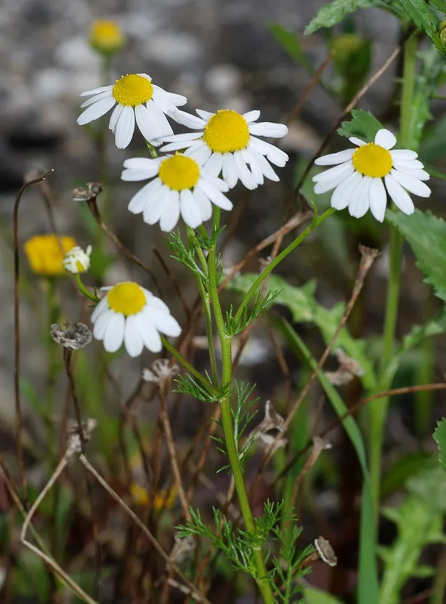

Edible flower or tea · Jun–Aug
Wild chamomile
Matricaria chamomilla
Also called Kamille
Wild chamomile is a edible flower or tea you can forage from June to August across Germany. Feathery leaves and small daisy flowers with a hollow, cone-shaped yellow centre and apple scent, on field edges.

Caution. Avoid if allergic to daisies.
When is wild chamomile in season in Germany?
Wild chamomile is usually in season June to August. Timing shifts with weather, latitude and altitude.
Where does wild chamomile grow in Germany?
Wild chamomile grows across Germany. Regions: North German lowlands and coast, West, East, South and the Alps.
How do you recognise wild chamomile?
Feathery leaves and small daisy flowers with a hollow, cone-shaped yellow centre and apple scent, on field edges.
How do you harvest wild chamomile?
Pinch off flower heads when the white petals are flat or just turning down.
How do you eat wild chamomile?
Tea.
How do you store wild chamomile?
Dry the flower heads.